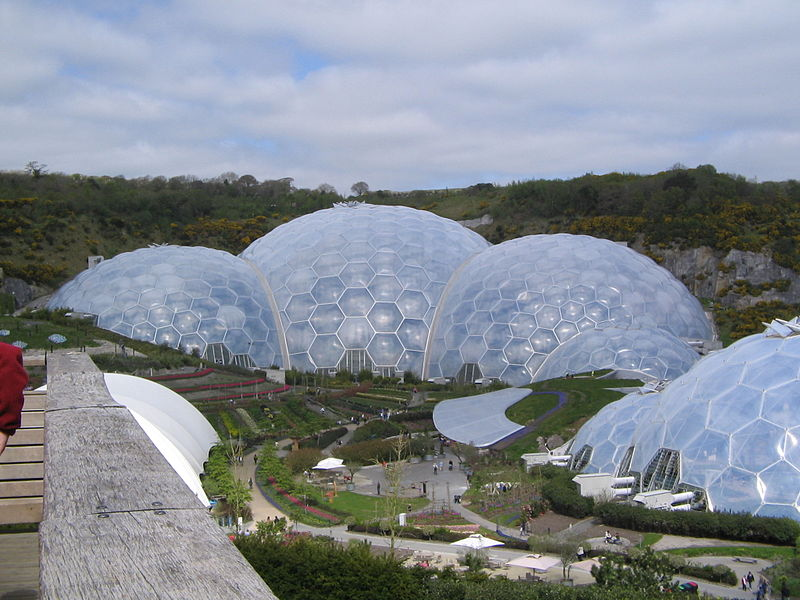
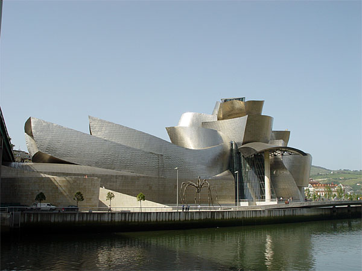
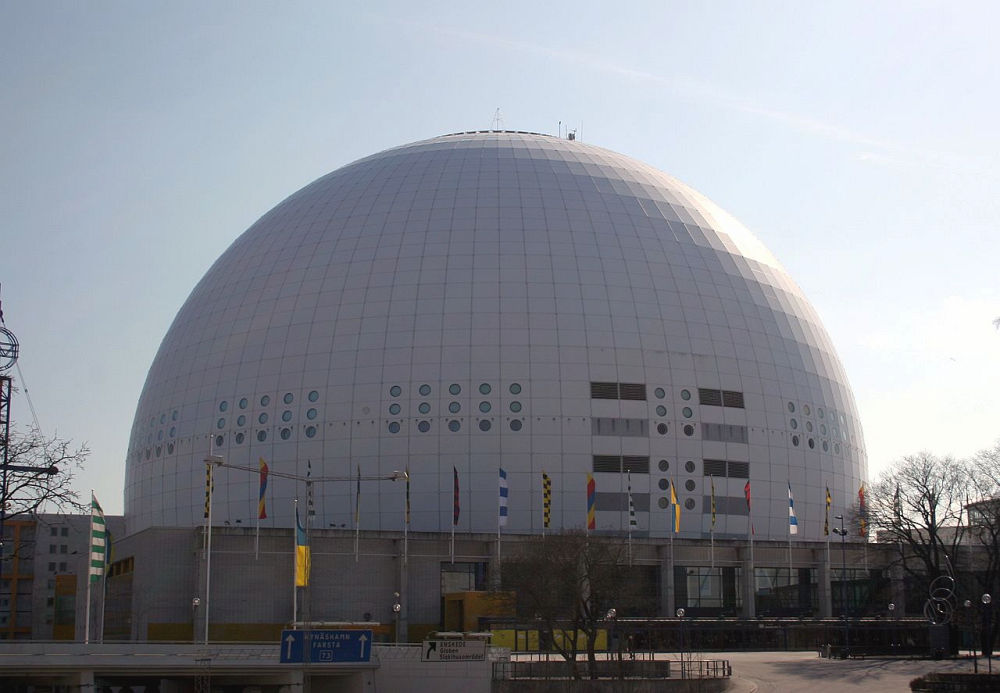
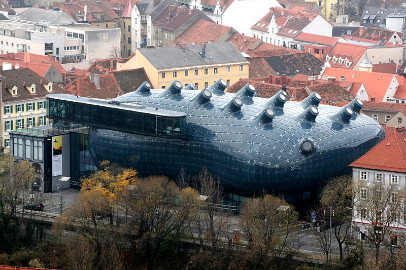

Nurt ten jest stosunkowo młody (początki pod koniec lat 90. XX wieku) i odznacza się niezwykłą plastycznością i fantazją w projektowaniu budowli. Projekty przywołują na myśl skojarzenia do płynnych kształtów, które możemy spotkać w naturze, są nacechowane abstrakcją, nieszablonowymi rozwiązaniami.
Złote Tarasy w Warszawie, projekt The Jerde Partnership
Styl blob to styl charakteryzujący się płynnymi i organicznymi kształtami. Rozwiązania blob w architekturze pozwalają stworzyć fantazyjne i plastyczne formy przestrzenne przez stosowanie nowoczesnych technik CAD. Architektura blob to przede wszystkim nowatorskie rozwiązania konstruktorskie, które pozwalają przekraczać granice w dziedzinie architektury. Często inspiracją dla architektów są kształty zaczerpnięte z przyrody, dlatego też bardzo często zrealizowane budynki kształtem przypominają naturalne formy organiczne spotykane w przyrodzie.
Słowo blob w języku angielskim oznacza kroplę, kleks rozlewający się wolno po powierzchni. Słowo blobitecture po raz pierwszy pojawiło się drukiem w 2002 r. W kolumnie „O języku” Williama Safire'a w New York Times Magazine. Chociaż w artykule zamierzone jest obraźliwe znaczenie, słowo to utknęło i jest często używane do opisywania budynków o zakrzywionych i zaokrąglonych kształtach.
The Montreal Biosphère, Buckminster Fuller
Blobo-budynki mają organiczny kształt, często przypominający amebę lub oryginalne wybrzuszenia lub „nadmuchane” formy architektoniczne. Niekonwencjonalne budowle najczęściej wprowadzają w swoim sąsiedztwie powiew świeżości. Swoją oryginalnością mogą prowadzić również do rozdarcia harmonijnej tkanki miejskiej. Formy blobów są abstrakcyjne, niekiedy przywołując odległe porównania do płynnych kształtów przyrodniczych. Najczęściej nie mają zatem związku z wymaganiami funkcjonalnymi i uwarunkowaniami technicznymi, stanowiąc wyrafinowaną grę formalną.
Najpopularniejsi architekci stylu blob:
Chcesz dowiedzieć się więcej o stylu blob? Sprawdź Wikipedię, klikając tutaj.
Poznaj więcej budynków charakterystycznych dla stylu blob:
|
 Eden Project, Nicholas Grimshaw |
 Muzeum Guggenheima w Bilbao, Frank Gehry |
|
 Ericsson Globe, Svante Berg&Lars Vretblad |
 Kunsthaus w Grazu, P. Cook |